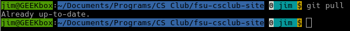
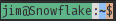
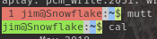
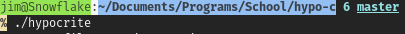
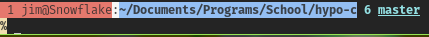
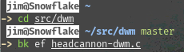
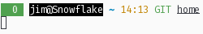
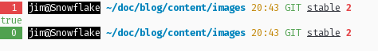

As you can tell from the subtitle of this blog, I don't use Bash anymore. In fact, I switched away from Bash a long time ago now, for a myriad of reasons. I'll probably touch on some of those here, but the basic point is that my old post about making Bash prompt you with information is woefully out of date. So, what changed?
The answer isn't just one thing. I didn't decide out of nowhere to abandon Bash, it was an iterative process that I started long before I really used the shell all that much. Zsh first impressed me back when I was still in high school, when I believed that every command had to be typed in its entirety in order for the command line to work. You can imagine how much more I started using it when somebody finally told me about tab completion!
Back then, I liked Zsh for the prompt switching ability it had. There were plenty of templates to make my prompt look much more utilized than it actually was, and of course I loved that sort of thing. I didn't go much further with it, so after reimaging my computer, I just wouldn't bother reinstalling it.
In reality, I learned how to use my computer more effectively. There are things that I did back when I posted about my bash prompt that I would never do these days, and I've learned a lot about what makes a prompt good. To be clear, there are plenty of things I did besides the shell stuff from back then that I'm still quite proud of, like the desktop in a browser that I also posted about, though that post is also pretty clearly out of date. However, I don't use KDE anymore, I use Sway (and occasionally my own fork of DWM), and I'm pretty sure I'd write an actual terminal drawing program before coming up with another character substitution script in Python to make text graphics.
All the Prompts
So here's a collection of all the screenshots of prompts I could find, though do note that I couldn't find that many compared to the number of iterations it's actually gone through. Most of these are minor iterations, though there's a fair number of them that I've not been able to find screenshots of using Powerline characters. These looked cool, even if my current design is much more practical:






and now my current prompt, in various situations:


While the terminal colors aren't quite constant over time anyhow, you'll note the switch to light mode. I find this much easier to use, though not as many people focus on it anymore. While I didn't end up using the palette from it, this post on Reddit is what convinced me that a light color palette could work as well as a dark one.
I'm not going to dwell too much on the specifics of each of the older ones, partly because I didn't screenshot them with the intent of saving the prompt, so I don't have the code for each. The prompt is a side effect of my work, not the work itself, anyhow.
What Information I Include
This hasn't changed a ton, but there are some notable differences between before and now. First of all, and probably most obvious, the status code always shows up, even if it's 0. This mostly just keeps the columns aligned down the screen, which looks a little less jarring. In the second to most recent screenshot, you'll see the first line is offset from the start of the line. I thought this was kind of clever, since you could tell whether a program returned 0 based on whether the first character was colored, but honestly that's no different than just making it green, and it did mess up the alignment a bit. Mostly the problem stemmed from the fact that I didn't specify the number of characters the return code would use, so sometimes errors would cause the lines to mismatch each other, even when everything was returning non-zero.
I've also started specifying what VCS I'm using. This hasn't been so important for a while, but I did use SVN for a short time, and I've used Mercurial to do real work, so both of these are supported, or at least they were at one point.
Sometimes I wanted to know how long a terminal had been sitting there so that I could give a rough estimate of how long something takes to run. However, I wouldn't always remember to use the time command to check that for sure, so I started including the time that the prompt was printed. Now, I can compare against the last prompt (and my memory) to get a rough idea of how long certain things will take.
Text Selection
You'll also notice that the only separator in the whole prompt is a space. I'm strictly using color to denote fields, that way you can easily select part of the prompt with a double-click. Incidentally, this is why I abandoned the Powerline characters, they looked nice except when you're selecting something, and would often times not render correctly on new installs or strange terminals. Some terminals also recognized them as more letters, meaning no double-click to select.
Furthermore, there's no "prompt ready" character. I'm honestly not a huge fan of these, especially on their own line, since it means you can't just triple-click a command to quickly put it in the clipboard. This helps a ton when I'm designing a new script to do something useful- I can prototype the command, get it working, then just select and paste it into the script body when I know it works.
Internals
This is where the real radical departure comes from. This goes way beyond the obvious "it's Zsh now!"
So we'll start with the prompt string. I'm going to gloss over a lot here, I promise I'll get back to (most of) it.
PROMPT=$'`lastreturn`%n@%m%{\033[0m%} %{\e[1;34m%}%~%{\e[m%} %{\e[33m%}$(date +%H:%M)%{\e[m%}`getgitbranch`\n'
OK, that's not so different, mostly just minor tweaks. I have commands start on a new line, and the string to denote non-printing characters has changed, moving on.
lastreturn() {
RCODE=$?
if [ $RCODE = 0 ]; then
echo -ne '%{\033[7;32m%} 0 %{\033[m%} %{\033[40;37m%}'
else
echo -ne "%{\033[7;31m%}"
printf "%03s" $RCODE
echo -ne " %{\033[m%} %{\033[40;37m%}"
fi
}
getgitbranch() {
git rev-parse > /dev/null 2>&1
if [ $? = 0 ]; then
CHANGEDFILES=$(git status -s 2>/dev/null | wc -l)
echo -ne "%{\033[m\033[32m%} GIT %{\033[0;4m%}"
echo -n $(git branch | sed -n '/\* /s///p')
if [ $CHANGEDFILES != 0 ]; then
echo -ne "%{\033[0;1;31m%} "
echo -n $CHANGEDFILES
fi
echo -ne '%{\033[m%}'
fi
}
Don't read how I did this before. It's maddening. Notably, there's Perl involved. Actually, don't read about how I don't like Zsh scripts, either. I think that was a file I/O issue over NFS, not an actual problem with the performance of Zsh. I use an SSD now, that obliterates the gigabit connection I was using then.
Instead, let's look at some optimizations I've made. In spite of the added information, my prompt is vastly faster than it was. This doesn't matter all the time, but when your disk is thrashing or your CPU is busy, it matters.
First, the Git integration. There's no point in calling git status if all we want to know is if we're in a repository. git rev-parse is quite a bit quicker. I'm amazed I didn't find it in my Zsh scripts article
There's also no else branch with a blank echo statement in the Git integration. I'm really not sure why I put that there.
If I haven't changed anything, the 0 representing the changed files is kind of a distraction, especially since it's now bright red, so I also don't bother printing that.
However, there really isn't anything optimized in the return code section, that's just about unchanged. I am using printf now to lock the number of printed characters to 3 to keep the same width, but that's it.
Syntax Highlighting
I learned about this and then couldn't stop using it. It's very handy to have a color coded reference telling you when a command is mistyped or a file doesn't exist. However, Arch Linux puts the script in a different place from everyone else, so it's 6 lines instead of 3, including whitespace.
The package to get this is called zsh-syntax-highlighting in pretty much every distro I've used.
# Enable syntax highlighting (if available)
[ -e /usr/share/zsh-syntax-highlighting/zsh-syntax-highlighting.zsh ] &&
source /usr/share/zsh-syntax-highlighting/zsh-syntax-highlighting.zsh
[ -e /usr/share/zsh/plugins/zsh-syntax-highlighting/zsh-syntax-highlighting.zsh ] &&
source /usr/share/zsh/plugins/zsh-syntax-highlighting/zsh-syntax-highlighting.zsh
Not Just Prompts
I also edit the window title based on the running command and the $PWD,
precmd(){
echo -ne "\033]0;zsh $PWD\007"
}
preexec(){
echo -ne "\033]0;$1\007"
}
but even more interesting is dev mode.
# Dev mode - enables/disables extra prompt settings, and optionally a dev env
# if such a thing exists. Tracks its state through $devmode_enabled
# so subsequent runs of the devmode command toggle its state.
export devmode_enabled="no"
devmode() {
if [ $devmode_enabled = "no" ]; then
PS1=$': %{\033[36m%}$(history -n -1)%{\033[m%}\n'$PS1
if [ -e env/bin/activate ]; then
source env/bin/activate
fi
export devmode_enabled="yes"
else
which deactivate > /dev/null 2>&1 &&
deactivate
PS1=$(echo $PS1 | tail -n 2)$'\n'
export devmode_enabled="no"
fi
}
So what is this?
In short, this is a quick shortcut to make activating and deactivating a Python virtual environment (or something similar) much easier, as well as a set of prompt changes that only really make sense when you're doing fairly serious work. Really, that amounts to indicating the last run command and sourcing a script in a certain directory relative to the $PWD.
Some of my own projects have started to take advantage of this, too. For example, if there's some unit testing commands that make no sense outside of a project directory, I'll put them in the virtual environment instead of my global bin directory. This has a number of positive effects. First of all, the commands can live with the project. If I repurpose them elsewhere, the original version stays intact, linked to the project it was developed for. It also means that if there are any environment settings I want to have enabled, I can simply activate the virtual environment and things will work great. I'll link to some of my projects that use this approach once they're public.
So, I mentioned Python virtual environments, and while that's what this was originally developed for, I don't actually use those anymore. Mostly, my argument against them boils down to platform incompatibility. They expect some level of dependencies are installed on your system, but since they look like they solve all dependencies, these might get left by the wayside, leaving somebody to find those packages on their own. Of course, it might still save time, but my estimation is that it's very rare for a Python application to actually get distributed with its virtual environment, it's more likely to get packaged in a Linux system alongside the relevant libraries from upstream. Avoiding them also means there's less incentive to import ancient libraries because they have a bug you rely on. Also, Python Pip has been used to distribute malware successfully already, where at the very least most external software distributions (like FreeBSD, Fedora, etc.) have package maintainers that can catch stuff like that, as well as platform bugs that a virtual environment couldn't possibly know about (but a package maintainer would).
Crucially, my own virtual environments tend to be helper scripts that I would generally want included with my software anyhow, rather than shortcuts to a third-party package manager, so I mostly dodge these issues. It's good to know about these pitfalls, however.
That's My Prompt
That's it. Going into this I expected I'd be writing (even) more about the prompt, but as it turns out, beyond just stylistic tweaks and a completely different shell, I'm mechanically doing the exact same thing I was years ago. That's not to say it hasn't improved since then, using Perl to count lines is insanely dumb and a good showcase of how green I was at shell scripting at the time, but the concept seemed really cool to me then, and it still kind of does!